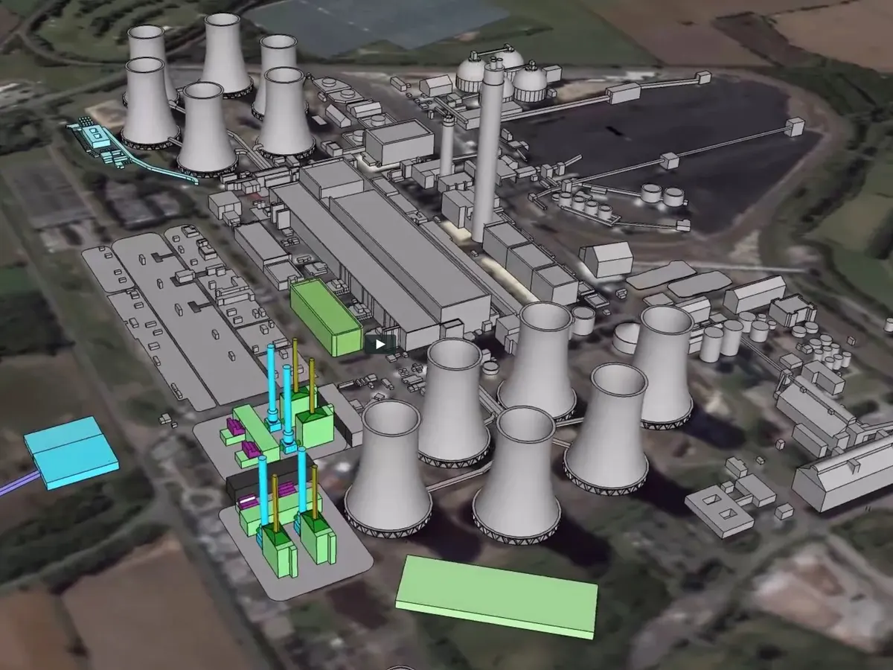
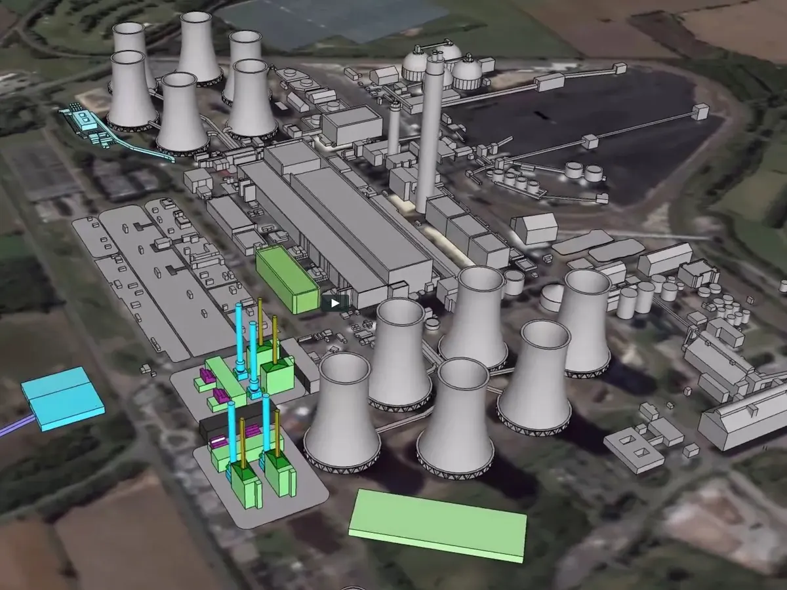

![]()
علیرضا طاهرخانی
حنانه فرهمند
نگین غفاری
محدثه سلطانزاده
مقدمه :
تاریخچه تولید برق برمیگردد به سال 1879 که بن فرانکلین اثبات کرد که روشنایی میتواند یکی از فرم های انرژی الکتریسته باشد. پس از آن توماس ادیسون که از آن به پدر الکتریسته یاد میشود در سال 1880 توانست در آزمایشگاه کوچک خود اولین لامپ روشنایی را بسازد و تحولی عظیم در تاریخ زندگی بشریت ایجاد کند. تلاش های ادیسون در سال 1882 منجر به ساخت اولین کارگاه تولید برق با استفاده از سوخت ذغال سنگ شد. تولید و گسترش استفاده از انرژی الکتریکی همواره یکی از دغدغه های تمدن ها در طول تاریخ بوده و تا امروز نیز ادامه داشته است به طوری که امروزه شاهد ظهور انواع نیروگاه های برق با استفاده از انرژی های تجدید پذیر مانند نیروگاه خورشیدی، هسته ای، بادی و زمین گرمایی هستیم.
نیروگاه (power generation plant) چیست؟
نیروگاه، مجموعه ای از تجهیزات صنعتی برای تولید برق یا انرژی الکتریکی است که در آن، از انواع انرژی های دیگر برای تبدیل به انرژی الکتریکی استفاده می شود و به نام های کارخانه برق یا مرکز برق هم شناخته میشود.
تعریف وزارت نیرو: نیروگاه عبارت است از “محل استقرار مولدهاي نيروي برق و تجهيزات وابسته”
مولد های برق: در فرآیند تولید انرژی الکتریکی مولد به ماشینی گفته می شود که به وسیله القای الکترو مغناطیسی انرژی مکانیکی را به الکتریکی تبدیل می کند.
انواع نیروگاه:
نیروگاه گازی :
نیروگاه گازی نیروگاهی است که سیال عامل در آن هوا است و بر اساس سیکل برایتون کار میکند. این نیروگاه دارای سه جزء اصلی کمپرسور، محفظه احتراق و توربین گازی میباشد. نحوهٔ به کار افتادن روتورها در این نیروگاهها بدین صورت است که سیال ورودی وارد کمپرسور شده و پس از تراکم و کمی گرم شدن وارد اتاق احتراق شده و توسط سوخت احتراق صورت میگیرد و سپس هوای داغ حاصل وارد توربین گازی شده و باعث چرخاندن ژنراتور میشود. کمپرسور به کار رفته در نیروگاه گازی از نظر ظاهری همانند توربین میباشد.
 

نیروگاه بخار :
در این سیستم های قدرت (نیروگاه بخار)، سیال در گردش، ضمن طی کردن سیکل، تغییر فاز می دهد. (بر خلاف سیکل های قدرت گازی) به عبارت دیگر یک سیکل ترمودینامیکی بسته را تشکیل می دهند که سیال در گردش، همواره در سیستم، جریان دارد. سیال معمولاً آب است و به صورت دو فاز مایع و بخار در سیکل جاری است. سیکل قدرتی که در نیروگاه های بخار استفاده می شود سیکل رانکین است.

توضیحات فیلم
در مرحله اول، آب با استفاده از پمپهای آب با فشار بالا به دیگ بخار (boiler) تزریق میشود. آب پرفشار در دیگ بخار حرارت جذب میکند و تبدیل به بخار فوق داغ (Super heat steam) با فشار بالا میگردد. بخار که انرژی زیادی دارد در طول «توربین» (تجهیزی مکانیکی که جریان انرژی سیال را به انرژی مکانیکی تبدیل میکند) جریان مییابد و آن را میچرخاند. بهمنظور استفاده کامل از انرژی بخار، سه مرحله توربین کمفشار (Low pressure turbine)، توربین فشار متوسط (intermediate pressure turbine) و توربین پرفشار (High pressure turbine) در نظر گرفته شده است. شفت (shaft) توربین به شفت ژنراتور متصل است؛ بنابراین زمانی که شفت توربین به حرکت درمیآید، ژنراتور میچرخد و انرژی الکتریکی تولید میشود. طی این فرآیند بخار انرژی خود را از دست میدهد. سپس بخار کمفشار اشباع از مسیر چگالنده (condenser) عبور میکند و به مایع تبدیل میشود. بعد از آن آب به سمت پمپهای مرحلهی اول هدایت و چرخه کامل میگردد. به همین تربیت این چرخه مرتبا برای تولید انرژی تکرار میشود.
نیروگاه سیکل ترکیبی (Combined cycle power plant)
نیروگاه سیکل ترکیبی در واقع ترکیبی از توربین بخار و توربین گازی میباشد به نحوی که ژنراتور توربین گازی برق را تولید میکند، در عین حال انرژی حرارتی تلف شده از توربین گاز (توسط محصولات احتراق) برای تولید بخار مورد نیاز توربین بخار مورد استفاده قرار میگیرد و به این طریق برق اضافی تولید میشود.
توضیحات فیلم
این نیروگاه از دو بخش اصلی تشکیل می شود:
>احتراق سوخت در توربین های گازی:
در مرحله اول، هوای فشرده شده با سوخت ترکیب می شود و اعمال حرارت بالا بر سوخت باعث احتراق شده و به جریان افتادن گاز در مسیرهای اطراف توربین ها آن ها را به چرخش در می آورد.
با چرخش سریع توربین، ژنراتور انرژی مکانیکی ناشی از چرخش ایجاد شده را به برق تبدیل می کند.
>بازیابی گرما:
ابتدا بویلربخار سیستم بازیابی گرما (HRSG) گرمای جذب شده از توربین گازی را به خود جذب می کند. در نیروگاه هایی که از این سیستم بهره نمی برند، این انرژی گرما از طریق اگزوز خارج شده و اتلاف بیشتری وجود خواهد داشت.
این گرما به تبخیر آب منجر خواهد شد و بخار به جریان افتاده دسته ای از توربین های بخار متصل
به ژنراتورها را به چرخش در آورده و برق تولید می کنند.
انواع نیروگاه سیکل ترکیبی

انواع نیروگاه های تجدید پذیر
این نیروگاه ها با استفاده از انرژی های پاک و تجدید پذیر به عنوان انرژی اولیه باعث تولید انرژی الکتریسیته می شوند.
نیروگاه بادی
نیروگاه بادی که به آن مزرعه بادی (wind farm) نیز می گویند، مکانی است شامل چندین توربین بادی،در این نیروگاه ها با برخورد باد به پره های توربین بادی و ایجاد اختلاف فشار بین دو طرف پره، توربین به حرکت در می آید. توربین به یک ژنراتور متصل است که این حرکت مکانیکی به ژنراتور منتقل شده وسپس ژنراتور نیروی مکانیکی را به الکتریسیته تبدیل می کند.الکتریسیته تولید شده یا جهت ذخیره سازی وارد باتری ها شده ویا برای تبدیل به ولتاژ مورد نظر جهت ورود به شبکه توزیع برق وارد ترانسفورماتور ها خواهد شد. نیروگاه های بادی در مناطقی که از جریان باد مناسبی برخوردار باشند نصب می شوند؛ مانند دشت ها، دریا ها و هر جای دیگر که پتانسیل بادی خوبی داشته باشد.
انواع نیروگاه بادی:
نیروگاه بادی در خشکی(onshore )
نیروگاه های بادی در اب ( offshore )
اجزا کامل توربین را میتوانید در (اینجا) مشاهده کنید